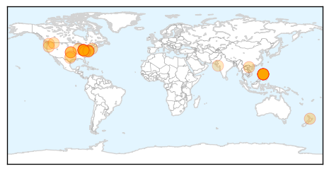
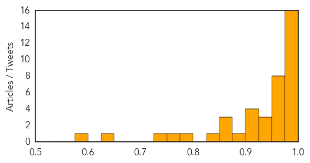
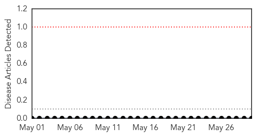
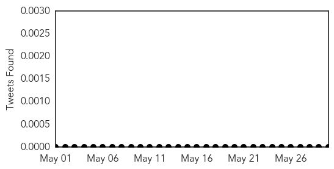

Measles
30-Day Web Trend
0 alerts, 0 warnings

30-Day Twitter Trend
0 alerts, 0 warnings

Article Locations
Article Confidences
Top Articles:
- 0.995
- Measles cases at a 20-year high
- 0.992
- Measles outbreak is a reminder to check vaccinations
- 0.989
- Measles outbreak could be linked to immunization fears
- 0.989
- Measles hit new high since 2000, reports CDC
- 0.989
- Measles cases reach 20-year high in the United States - CDC
- 0.988
- As Summer Travel Begins, the CDC Warn Measles Cases Are at 20-Year High
- 0.988
- Number of measles cases spike to 20-year high, 15 outbreaks reported
- 0.987
- Measles Cases hit 20-year high in the United States
- 0.986
- Measles cases reach 20 year high in U.S.
- 0.986
- Measles Hits Amish Communities, And U.S. Cases Reach 20-Year High
- 0.983
- CDC: U.S. Measles Cases at 20-Year High
- 0.981
- US Measles Cases at 20-year High
- 0.980
- US measles outbreak worst; 288 cases detected
- 0.979
- Van Wert County urges residents to be Cautions, ensure measles vaccination is current
- 0.979
- Vaccine Refusal Has Helped Drive U.S. Measles Cases To A 20-Year High
- 0.976
- Measles Cases Spike to a 20-Year High in the U.S. : News : Counsel & Heal
- 0.975
- Measles cases in U.S. hit a 20-year high
- 0.973
- Knox Co. Health Dept. weighs in on measles outbreak
- 0.972
- CDC: U.S. Measles Cases Hit 20-Year High -- Occupational Health & Safety
- 0.971
- When measles strikes
- 0.970
- Measles outbreaks up nationwide, in Oregon; Most cases imported after exposure in foreign countries
- 0.969
- News from southeastern Connecticut
- 0.967
- VIEW FROM AWAY: When measles strikes
- 0.966
- Concerns measles may have spread in NZ
- 0.931
- Diabetes on the rise in major cities
- 0.928
- Measles on rise because people aren't getting vaccinated, says Loyola Infectious Disease leader
- 0.925
- Measles at a 20-year high: CDC
- 0.920
- Vaccination Opt Out Is A Cop Out That Literally Is Making People Sick, Says Loyola Infectious Disease Leader
- 0.917
- US faces worst outbreak of measles in 20 years
- 0.909
- Measles scare after Armageddon
- 0.902
- U.S. Measles Cases Hit Highest Rate Since 1994
- 0.880
- Measles Cases Reach 20-Year High in United States
- 0.869
- Two more measles cases
- 0.866
- CDC: Jump in Measles Cases is Cause for Alarm
- 0.853
- Measles Surge Worries Health Officials « CBS Denver
- 0.844
- Reported Measles Cases Worst in 20 Years
- 0.779
- Amish measles cases are over half of all measles cases
- 0.764
- Measles kills child, Rajkot Municipal Corporation battles to contain outbreak
- 0.731
- The current measles outbreak is avoidable
- 0.630
- Hand sanitizer powerful weapon against current measles outbreak
- 0.584
- Majority Of U.S. Measles Cases Are In Ohio
Top Tweets:
-
No tweets found for May 30, 2014
Bubonic Plague
30-Day Web Trend
0 alerts, 0 warnings

30-Day Twitter Trend
0 alerts, 0 warnings

Article Locations

Article Confidences

Top Articles:
-
No articles found for May 30, 2014
Top Tweets:
-
No tweets found for May 30, 2014